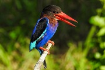

| Gambar | Nama | Asal - Penyebaran | Taksonomi | Ciri Khas |
|---|---|---|---|---|
| Komodo | Pulau Komodo | Filum:Chordata Kelas:Reptilia Ordo:Squamata Famili:Varanidae Genus:Varanus Spesies:Varanus komodoensis |
Komodo adalah kadal terbesar yang ada di dunia. Digadang-gadang komodo menjadi suku terakhir bangsa dinosaurus. Ciri khas komodo adalah ukurannya yang besar, bentuk kepalanya pipih, kaki menekuk, dan ekornya tebal.
Baca Selengkapnya Disini |
|
| Anoa | Sulawesi dan Buton | Filum:Chordata Kelas:Mammalia Ordo:Artiodactyla Famili:Bovidae Genus:Bubalus Spesies:Bubalus quarlesi |
Memiliki tubuh kekar dengan bagian belakang sedikit lebih tinggi dari bahu. Anoa dewasa memiliki tinggi bahu rata-rata 86 cm. Tanduk anoa dewasa berbentuk segitiga, pipih, dan berkerut. Tanduk dimulai dari dahi dan mengarah ke belakang secara diagonal.
Baca Selengkapnya Disini |
|
| Burung Maleo Senkawor | Sulawesi Tenggara | Filum:Chordata Kelas:Aves Ordo:Galliformes Famili:Megapodiidae Genus:Macrocephalon Spesies:M.maleo/td> | Burung ini memiliki bulu berwarna hitam, kulit sekitar mata berwarna kuning, iris mata merah kecokelatan, kaki abu-abu, paruh jingga, dan bulu sisi bawah berwarna merah-muda keputihan. Di atas kepalanya terdapat tanduk atau jambul keras berwarna hitam.
Baca Selengkapnya Disini |
|
| Kuskus | Sulawesi, Maluku, dan Papua | Filum:Chordata Kelas:Mammalia Ordo:Diprotodontia Famili:Phalangeridae Genus:Phalanger dan Spilocuscus Spesies:Ailurops ursinus |
Kuskus memiliki bulu yang tebal dan bermacam warna seperti coklat,hitam dan putih. Selain itu kuskus mempunyai ekor yang panjang dan kuat (prehensile) yang berfungsi sebagai alat untuk berpegangan saat berpindah dari satu dahan ke dahan lainnya.
Baca Selengkapnya Disini |
|
| Babi Rusa | Sulawesi | Filum:Chordata Kelas:Mammalia Ordo:Artiodactylas Famili:Suidae Genus:Babyrousa Spesies:B.babyrussa |
Karena fisiknya yang menyerupai babi, namun taring panjang melengkung yang timbul di atas hidungnya, tampak seperti ranggah rusa, sehingga mereka disebut babi rusa. Salah satu ciri yang mudah diingat ia punya cula atau gading panjang yang mencuat ke atas menembus moncongnya.
Baca Selengkapnya Disini |
|
|  | Burung Raja-Udang | Nusa Tenggara dan Papua | Filum:Chordata Kelas:Aves Ordo:Coraciiformes Famili:Alcedinidae Genus:Alcedo Spesies:Alcedo coerulescens |
Kebanyakan bulu raja-udang berwarna cerah. Hijau dan biru adalah warna yang paling umum. Burung raja-udang memiliki paruh yang panjang seperti belati. Raja-udang memiliki kaki yang pendek, meskipun spesies yang berburu mangsa di tanah memiliki kaki yang lebih panjang.
Baca Selengkapnya Disini |
| Soa-soa Layar | Sulawesi | Filum:Chordata Kelas:Reptilia Ordo:Squamata Famili:Agamidae Genus:Hydrosaurus Spesies: H.amboinensis |
Soa-soa memiliki kepala kecil dengan moncong panjang dan lubang hidung oval di dekat ujung moncong. Pada kepala dan moncong terdapat semacam punuk berskala besar dan sebagian lagi berskala kecil. Karena populasinya yang semakin langka, soa-soa layar masuk dalam kategori hewan yang harus dilindungi.
Baca Selengkapnya Disini |